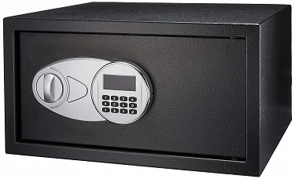

Cracking The Code (Variant 2)
For the other variant of this exercise, click here.
Spring 2019: Question 10 (use C language to write this program)
 Mr. Chang, a rich landowner, stores all his valuables in a safe. The safe is equipped with a password lock. Mr. Chang writes the clues to open the safe on a scroll, and he decides to inherit his wealth to his only son. The contents of the scroll are two lines of sentences, made of alphabets, numbers, spaces, and punctuation marks. The instructions for cracking the code are as follows:
- The first sentence contains n numbers. Take the numbers from the sentences and reverse them. Find the sum of the numbers.
Do note that the resulting number must be 4 digits long.
If the number has more than 4 digits, then take the last 4 digits.
If the number has less than 4 digits, then add 0 to the missing spaces in the beginning. - For the second sentence, count the appearance of every letter in that sentence. Take the frequency of all the letters which appear at least 1 time and no more than 9 times, and arrange them based on where the letter is first seen in the sentence.
Note that UPPERCASE CHARACTERS and lowercase characters are considered different characters.
If a number is seen in the sentence, output the number based on its location.
Input instruction: Input two sentences, which contain alphabets, numbers, and spaces.
Output instruction: Output the password in one line.
| Sample Input | Explanation | Expected Output |
|---|---|---|
|
Today is my 45 birthday, There are 65 guest coming for the 1000 party, I got 789 gifts to open Be9tter to light one candle than to curse the darkness xxxxxxxxxxx |
Numbers in first sentence: 45, 65, 1000, and 789.
Processing: |
109817973321134232131 |